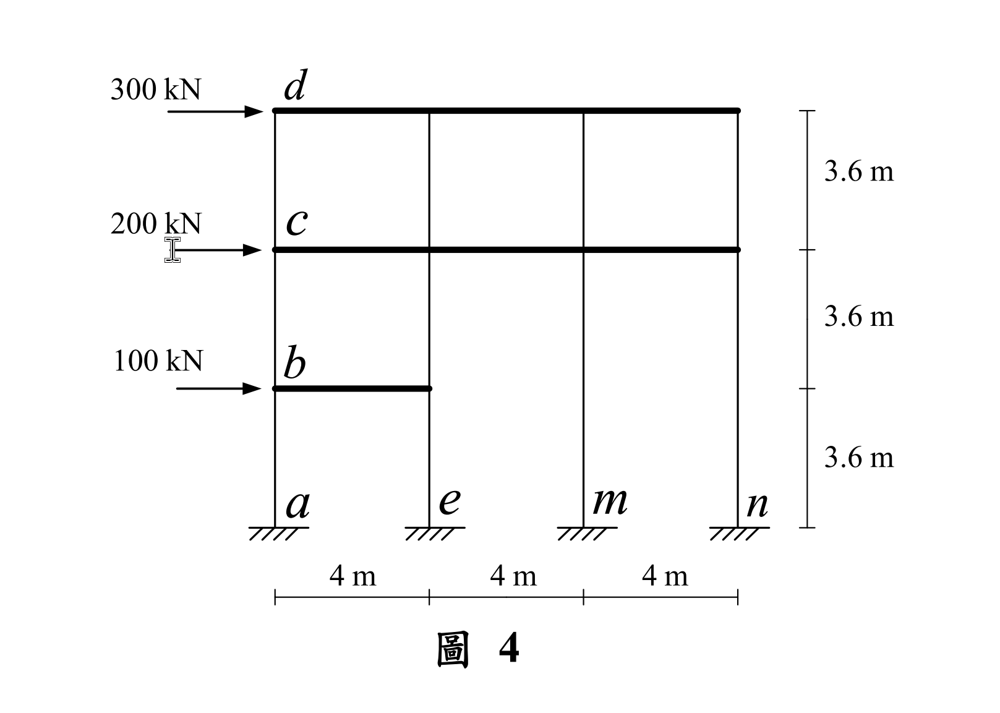

考題編號：SA-2022-4
主分類： SA-U2-4 靜不定結構與位移
副分類： 無
分析法： 剪力棟架法 (Shear Building Method)
標籤： 剪力棟架 剛性樓板 側移剛度 不規則構架 挑高柱
1. 原始題目重述 (Problem Restatement)
如圖 4 所示三層樓構架，各樓層承受水平外力，構架梁柱桿件的彈性模數都為 $E$，另構架之柱桿件斷面慣性矩都為 $I$，且 $EI = 97200 \text{ kN-m}^2$，而構架之梁桿件斷面慣性矩為無限大。不考慮構架梁柱桿件的軸向變形，求 $c$ 點水平位移、$b$ 點水平位移、$a$ 點及 $m$ 點固定端的水平反力與彎矩。（25 分）

圖說：(待補充說明)
2. 考題核心精神與出題者意圖 (Core Concepts & Examiner's Intent)
核心精神：
- 剪力棟架 (Shear Building) 概念：題目明示「梁桿件斷面慣性矩為無限大 ($EI=\infty$)」且「不考慮軸向變形」，這是標準的剪力棟架假設。意即所有節點均無轉角 ($\theta=0$)，且同一樓層的所有節點具有相同的水平側移 ($\Delta$)。
- 不規則樓層 (挑高柱) 的剛度分配：觀察圖 4，一樓 ($y=3.6\text{m}$) 的梁僅存在於第一跨 (x=0~4m)，而第二、三跨 (x=4~12m) 處無梁。這導致第 3、4 根柱子從地面直通二樓，形成兩層樓高 ($7.2\text{m}$) 的「挑高柱」。考驗考生是否能正確判別各樓層的等效側移剛度並建立正確的平衡方程式。
3. 解題戰略地圖與陷阱分析 (Strategic Roadmap & Trap Analysis)
戰略步驟：
- 計算柱側移剛度：利用兩端固定柱的側移剛度公式 $k = 12EI / L^3$，分別計算「標準柱 (高 3.6m)」與「挑高柱 (高 7.2m)」的剛度。
- 定義自由度：定義一樓位移為 $\Delta_1$、二樓位移為 $\Delta_2$、三樓位移為 $\Delta_3$。
- 建立樓層剪力平衡方程式：利用水平截面法 (Free Body Diagram of stories) 找出各樓層剪力與位移的關係。
- 三樓截面：切過 4 根標準柱。
- 二樓截面：切過 2 根標準柱 (1、2 柱) 與 2 根挑高柱 (3、4 柱)。
- 一樓截面：切過 2 根標準柱 (1、2 柱) 與 2 根挑高柱 (3、4 柱)。 - 解聯立方程式：求得各樓層的絕對位移。
- 回推反力：將位移代回基層柱的剛度方程式，求得底部剪力與彎矩。
陷阱分析：
- 致命陷阱：未察覺右側兩跨在一樓無梁。若盲目套用每層皆有 4 根柱子的公式，將會導致第一層與第二層剛度計算錯誤。圖面上的梁線段長短是解題的關鍵。
3.5 變數層次分析 (Variable Hierarchy Analysis)
最終目標
求解 Δ1 (b點位移), Δ2 (c點位移), Ha, Ma, Hm, Mm
本題關鍵公式
$\boxed{\cdot}$ = 需由前步驟推導，非題目直接給定的變數
$$\text{柱側移剛度: } k = \frac{12EI}{L^3}$$
$$\text{柱底剪力: } V = k \times \Delta_{relative}$$
$$\text{柱底彎矩: } M = V \times \frac{L}{2}$$
L1：題目直接給定
| 符號 | 數值 | 說明 |
|---|---|---|
| $EI$ | $97200 \text{ kN-m}^2$ | 柱抗彎剛度 |
| $h$ | $3.6 \text{ m}$ | 標準層高 |
| $F_1, F_2, F_3$ | $100, 200, 300 \text{ kN}$ | 各樓層外加側力 |
L2：需知識點推導
| 符號 | 公式/來源 | 數值 |
|---|---|---|
| $k$ | $12EI / h^3$ | 標準柱側移剛度 |
| $k_{double}$ | $12EI / (2h)^3$ | 挑高柱側移剛度 |
4. 步驟化詳細計算過程 (Step-by-Step Detailed Calculation)
Step 1：計算柱側移剛度
標準柱（高 $L = 3.6\text{m}$）：
$$k = \frac{12EI}{h^3} = \frac{12 \times 97200}{3.6^3} = \frac{1166400}{46.656} = 25000 \text{ kN/m}$$
挑高柱（高 $L = 2h = 7.2\text{m}$，對應第 3、4 根柱子，自地面直通二樓）：
$$k_{double} = \frac{12EI}{(2h)^3} = \frac{k}{8} = \frac{25000}{8} = 3125 \text{ kN/m}$$
Step 2：建立樓層剪力平衡方程式
設一、二、三樓之水平位移分別為 $\Delta_1, \Delta_2, \Delta_3$。
1. 三樓截面 (介於 y=7.2m 與 10.8m 之間)：
切過 4 根標準柱。該截面以上之總外力為 $V_{ext,3} = 300 \text{ kN}$。
$$4k(\Delta_3 - \Delta_2) = 300$$
$$100000(\Delta_3 - \Delta_2) = 300 \implies \Delta_3 - \Delta_2 = 0.003 \quad \text{--- (式 1)}$$
2. 二樓截面 (介於 y=3.6m 與 7.2m 之間)：
切過第 1、2 根標準柱（連接一、二樓，位移差為 $\Delta_2 - \Delta_1$），以及第 3、4 根挑高柱（連接地面與二樓，位移差為 $\Delta_2 - 0$）。
該截面以上之總外力為 $V_{ext,2} = 300 + 200 = 500 \text{ kN}$。
$$2k(\Delta_2 - \Delta_1) + 2k_{double}(\Delta_2 - 0) = 500$$
$$2(25000)(\Delta_2 - \Delta_1) + 2(3125)\Delta_2 = 500$$
$$50000(\Delta_2 - \Delta_1) + 6250\Delta_2 = 500$$
$$56250\Delta_2 - 50000\Delta_1 = 500 \implies 56.25\Delta_2 - 50\Delta_1 = 0.5 \quad \text{--- (式 2)}$$
3. 一樓截面 (介於 y=0m 與 3.6m 之間)：
切過第 1、2 根標準柱（連接地面與一樓，位移差為 $\Delta_1 - 0$），以及第 3、4 根挑高柱（連接地面與二樓，位移差為 $\Delta_2 - 0$）。
該截面以上之總外力為 $V_{ext,1} = 300 + 200 + 100 = 600 \text{ kN}$。
$$2k(\Delta_1 - 0) + 2k_{double}(\Delta_2 - 0) = 600$$
$$50000\Delta_1 + 6250\Delta_2 = 600 \implies 50\Delta_1 + 6.25\Delta_2 = 0.6 \quad \text{--- (式 3)}$$
Step 3：解聯立方程式
將 (式 2) 與 (式 3) 相加消去 $\Delta_1$：
$$(56.25\Delta_2 - 50\Delta_1) + (50\Delta_1 + 6.25\Delta_2) = 0.5 + 0.6$$
$$62.5\Delta_2 = 1.1 \implies \Delta_2 = \frac{1.1}{62.5} = \mathbf{0.0176 \text{ m}}$$
將 $\Delta_2$ 代回 (式 3) 求 $\Delta_1$：
$$50\Delta_1 + 6.25(0.0176) = 0.6$$
$$50\Delta_1 + 0.11 = 0.6 \implies 50\Delta_1 = 0.49 \implies \Delta_1 = \mathbf{0.0098 \text{ m}}$$
(註：若需 $\Delta_3$，代入式 1 可得 $\Delta_3 = 0.0176 + 0.003 = 0.0206 \text{ m}$)
Step 4：計算各點反力與彎矩
對於 $a$ 點 (左側標準柱底)：
- 柱高 $h = 3.6\text{m}$，頂端水平位移 $\Delta_1 = 0.0098\text{m}$。
-
水平剪力 (推力)：$V_a = k\Delta_1 = 25000 \times 0.0098 = \mathbf{245 \text{ kN}}$。
結構向右側移，故地面需提供向左之反力：$H_a = 245 \text{ kN} (\leftarrow)$。 -
柱底彎矩：剪力棟架中，柱端彎矩 $M = V \times \frac{h}{2}$。
$M_a = 245 \times \frac{3.6}{2} = \mathbf{441 \text{ kN-m}}$。
欲抵抗柱子右傾趨勢，需逆時針彎矩：$M_a = 441 \text{ kN-m} (\circlearrowleft)$。
對於 $m$ 點 (右側挑高柱底)：
- 柱高 $2h = 7.2\text{m}$，頂端水平位移 $\Delta_2 = 0.0176\text{m}$。
-
水平剪力 (推力)：$V_m = k_{double}\Delta_2 = 3125 \times 0.0176 = \mathbf{55 \text{ kN}}$。
反力方向同為向左：$H_m = 55 \text{ kN} (\leftarrow)$。 -
柱底彎矩：$M_m = V_m \times \frac{2h}{2} = V_m \times h$。
$M_m = 55 \times 3.6 = \mathbf{198 \text{ kN-m}}$。
方向同為逆時針：$M_m = 198 \text{ kN-m} (\circlearrowleft)$。
(檢核：總基底剪力 $\sum H = 2 \times 245 + 2 \times 55 = 490 + 110 = 600 \text{ kN}$，恰等於總外力，平衡無誤！)
5. 最終答案彙整 (Summary of Answers)
- $c$ 點水平位移：$0.0176 \text{ m}$ (或 $17.6 \text{ mm}$)，方向向右。
- $b$ 點水平位移：$0.0098 \text{ m}$ (或 $9.8 \text{ mm}$)，方向向右。
- $a$ 點固定端反力與彎矩：
- 水平反力：$245 \text{ kN}$，方向向左。
- 彎矩：$441 \text{ kN-m}$，逆時針方向。 - $m$ 點固定端反力與彎矩：
- 水平反力：$55 \text{ kN}$，方向向左。
- 彎矩：$198 \text{ kN-m}$，逆時針方向。